공모전 제출 케이스 · 3인 팀 작업 · 포트폴리오용 제작 기록
최종 영상만 제시하는 자료가 아닌, 초기 아이디어가 팀 작업 안에서 광고 구조로 수렴하는 과정 기록
3인 팀
30초 제출본
주요 스토리보드
생성 결과 검토
2026 무신사 무진장 인공지능 광고 공모전 제출 케이스
축원굿의 성공 기원 구조를 무신사 오렌지 신호가 이어지는 글로벌 패션 릴레이로 번역한 30초 AI 광고 영상
최종 영상만 제시하는 자료가 아닌, 초기 아이디어가 팀 작업 안에서 광고 구조로 수렴하는 과정 기록
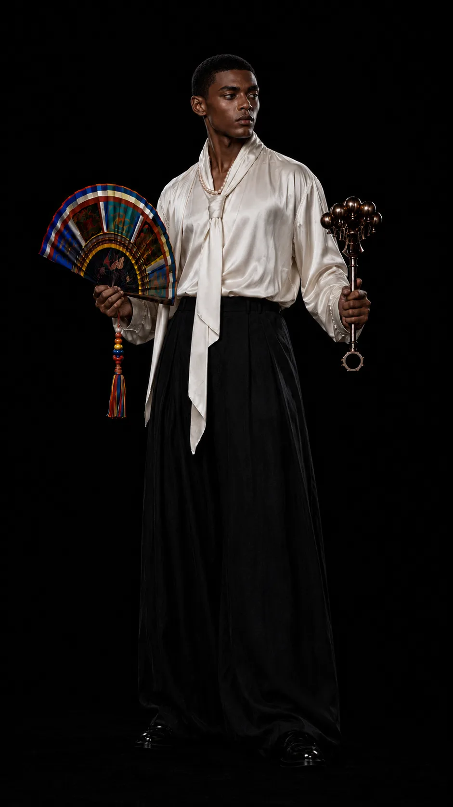
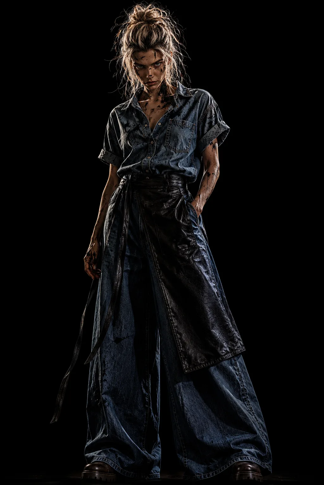
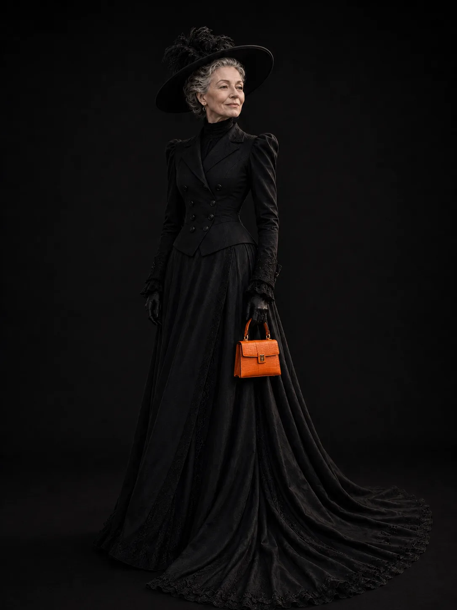
무엇을 만들었나
인물의 나열이 아니라, 하나의 오렌지 신호가 장면을 이어가는 축제형 광고 구조
무당의 방울과 부채에서 시작된 오렌지 신호가 붓선, 연기, 런웨이, 아이들, 스케이트보드를 거쳐 무당 복귀와 키비주얼 엔딩으로 닫히는 30초 제출본
미리 정한 기획 초안
축원굿, 글로벌 패션, 동서양 예술 교차를 하나의 오렌지 신호가 이어지는 장면 구조로 묶은 초기 스파인
전통 굿의 직접 재현이 아니라, 성공을 비는 시작-전환-확장-복귀 구조를 30초 광고 흐름으로 번역
의식의 시작을 맡는 무당 퍼포머가 방울과 부채로 오렌지 신호를 연다
붓과 연기가 선, 질감, 거리 장면으로 이어지는 전환 장치가 된다
런웨이, 아이들, 스케이트보드가 신호를 이어받아 축제 흐름을 넓힌다
수호자 이미지로 검토한 후보 자산
성공 기원 메시지를 더 명확히 닫는 무당 복귀 구조
아름다운 컷보다 신호 연결을 우선한 장면 기준
최종 영상 흐름
해태 엔딩과 군무 확장은 후보 자산으로 분리하고, 제출본은 무당 복귀와 키비주얼 엔딩으로 축원 구조를 닫았다.
| 시간 | 화면 판단 |
|---|---|
| 0초대 | 무당의 하체, 방울, 부채로 여는 의식의 시작 |
| 4초대 | 붓 아티스트의 오렌지 선과 원형 질감 생성 |
| 9초대 | 오렌지 연기 속 런웨이와 세대 교차 등장 |
| 14초대 | 5주년 풍선과 아이들을 통한 축제성 강화 |
| 19초대 | 스케이트보드와 바닥선으로 만드는 후반 속도 |
| 25초대 | 무당 복귀, 오렌지 폭발, 무진장 키비주얼 엔딩 |
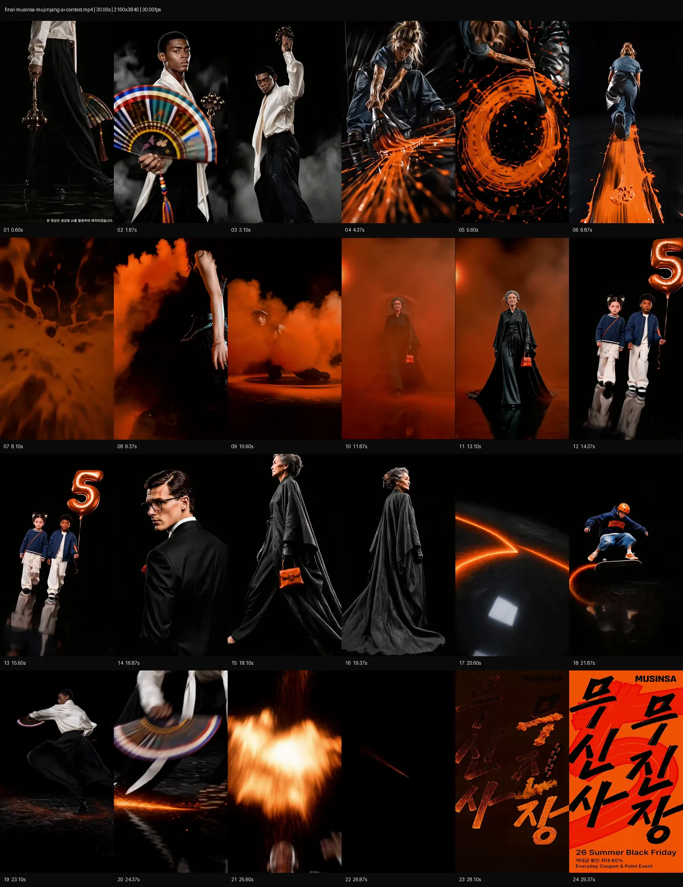
최종 제출본 전체 흐름. 초안과 다른 점은 버전 변화 슬라이드에서 분리
캐릭터와 행동 설계
최종 사용, 압축 사용, 과정 자산, 후보 제외를 구분해 30초 제출본의 장면 연결 기준을 드러냈다.
의식의 시작과 복귀를 담당하는 구조적 앵커
오렌지 신호를 선과 원형 질감으로 전환
축제 흐름 안에서 세대 교차를 만드는 런웨이 장면
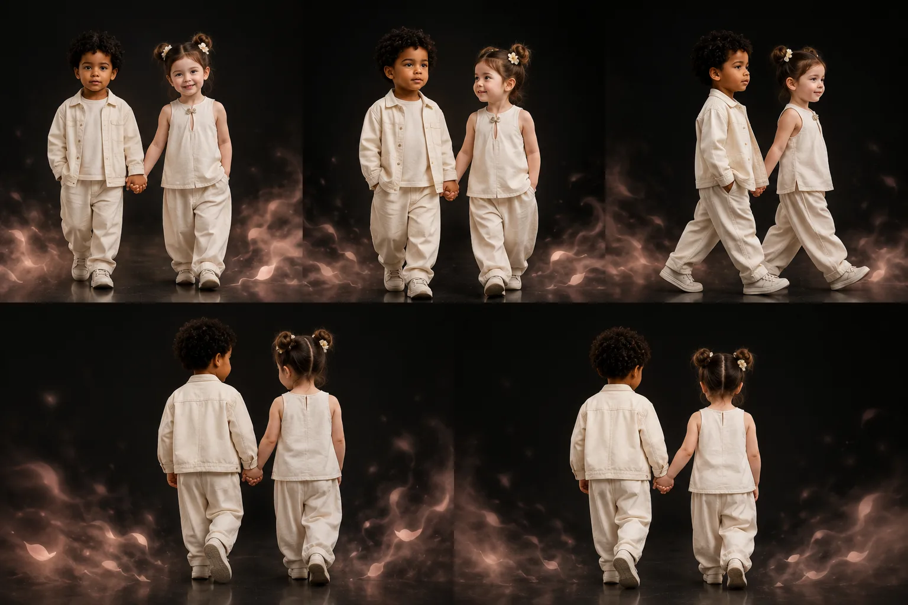
무진장 5주년의 축제성을 직접화
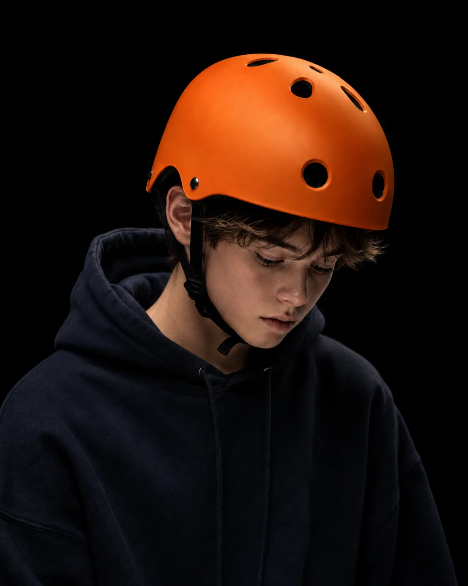
후반부 속도와 거리 패션 감각을 연결
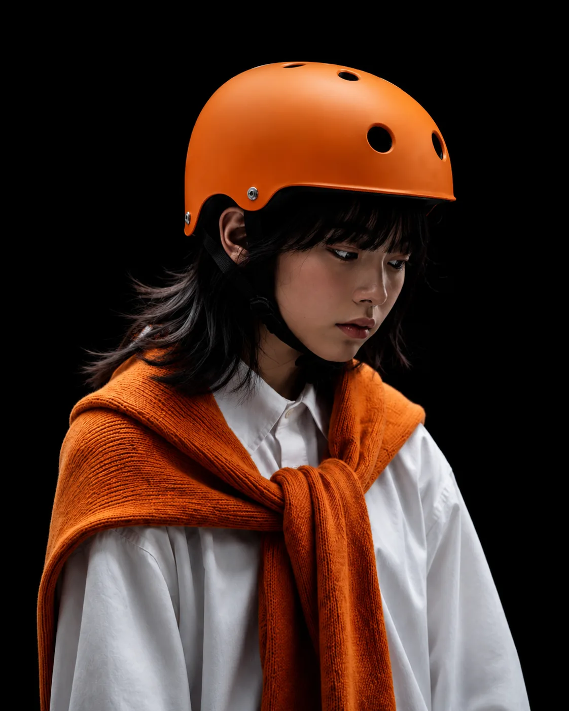
후반 거리 장면을 검토한 과정 자산
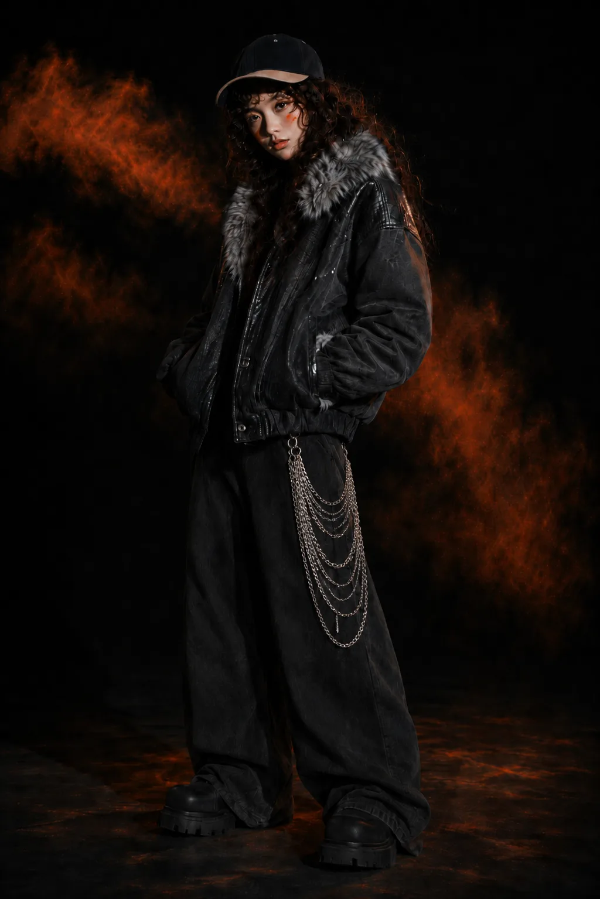
오렌지 신호의 질감 확장
최종 엔딩이 아니라 수호자 이미지로 검토한 후보 자산
스토리보드와 생성 검토
과정 자산 중 컷 전환, 색 신호, 동작 지속성이 분명한 대표 보드만 선별했다.
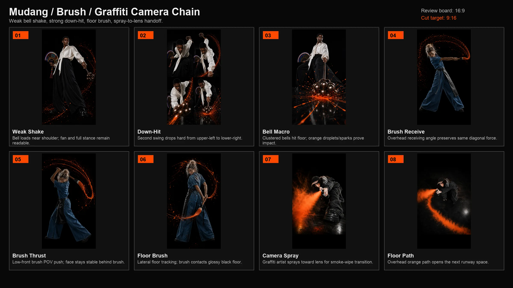
무당의 동작이 붓선과 그래피티 질감으로 넘어가는 연결 검토
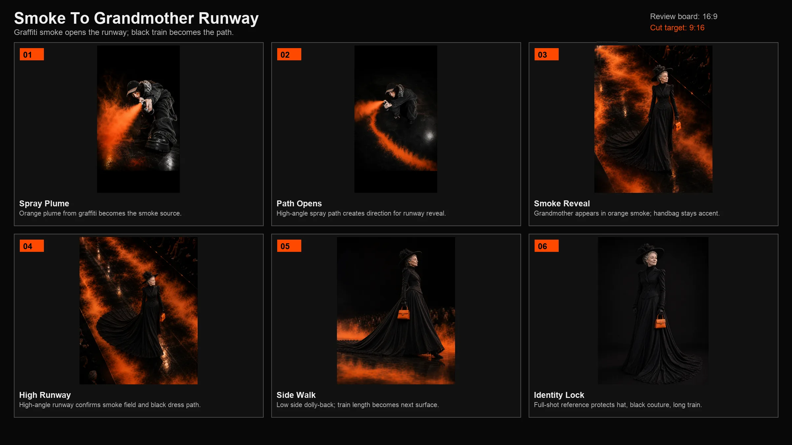
오렌지 연기가 할머니 런웨이와 아이들 장면을 여는 전환 조정
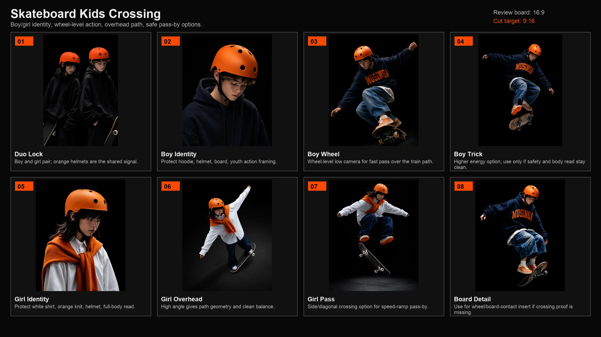
바닥 접점이 오렌지 신호를 이어받는 후반 연결 비교
초안에서 최종본으로
후보 폐기가 아니라, 30초 제출본에서 오렌지 신호, 동작 지속성, 키비주얼 복귀가 가장 선명하게 읽히도록 압축한 선택 과정
산출물 정리 방식
최종 영상, 컨택트시트, 캐릭터/액션 보드, 변경 로그를 분리해 결과물과 제작 판단의 근거가 함께 읽히도록 정리했다.
30초 제출본 전체 흐름을 확인하는 기준 자료
무당, 붓, 런웨이, 아이들, 스케이트보드의 장면 기능 자료
후보와 반복 생성 결과를 컷 전환 기준으로 비교한 자료
초안에서 최종 제출본까지의 압축 판단 기록
팀 작업과 내 역할
개인 기여와 팀 협업의 경계를 분리해 정리한 역할 중심 크레딧